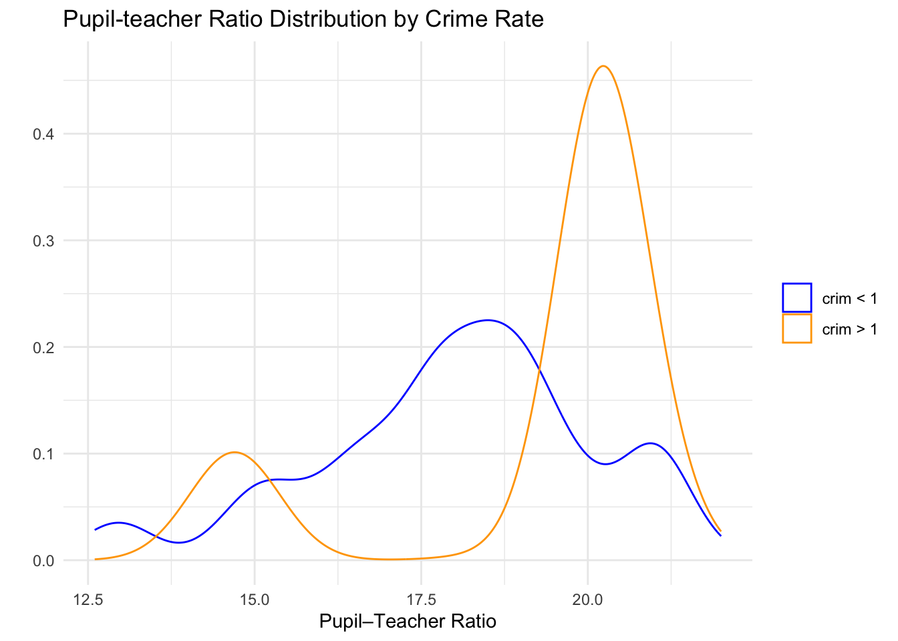

This assignment is to be submitted individually. Turn in this assignment as an HTML or PDF file to ELMS. Make sure to include the R Markdown or Quarto file that was used to generate it. You should include the questions in your solutions. You may use the qmd file of the assignment provided to insert your answers.
Git and GitHub
1) Provide the link to the GitHub repo that you used to practice git from Week 1. It should have:
Your name on the README file.
At least one commit with your name, with a description of what you did in that commit.
city morint ethhet geomob
Length:43 Min. : 4.20 Min. :10.60 Min. :12.10
Class :character 1st Qu.: 8.70 1st Qu.:16.90 1st Qu.:19.45
Mode :character Median :11.10 Median :23.70 Median :25.90
Mean :11.20 Mean :31.37 Mean :27.60
3rd Qu.:13.95 3rd Qu.:39.00 3rd Qu.:34.80
Max. :19.00 Max. :84.50 Max. :49.80
region
Length:43
Class :character
Mode :character
3) Read in the .txt version and store it in an object called angell_txt.
V1 V2 V3 V4
Length:43 Min. : 4.20 Min. :10.60 Min. :12.10
Class :character 1st Qu.: 8.70 1st Qu.:16.90 1st Qu.:19.45
Mode :character Median :11.10 Median :23.70 Median :25.90
Mean :11.20 Mean :31.37 Mean :27.60
3rd Qu.:13.95 3rd Qu.:39.00 3rd Qu.:34.80
Max. :19.00 Max. :84.50 Max. :49.80
V5
Length:43
Class :character
Mode :character
4) What are the differences between angell_stata and angell_txt? Are there differences in the classes of the individual columns?
names(angell_stata)
[1] "city" "morint" "ethhet" "geomob" "region"
names(angell_txt)
[1] "V1" "V2" "V3" "V4" "V5"
sapply(angell_stata, class)
city morint ethhet geomob region
"character" "numeric" "numeric" "numeric" "character"
11) Do any of the suburbs of Boston appear to have particularly high crime rates? Tax rates? Pupil-teacher ratios? Comment on the range of each variable.
crim tax ptratio
Min. : 0.00632 Min. :187.0 Min. :12.60
1st Qu.: 0.08205 1st Qu.:279.0 1st Qu.:17.40
Median : 0.25651 Median :330.0 Median :19.05
Mean : 3.61352 Mean :408.2 Mean :18.46
3rd Qu.: 3.67708 3rd Qu.:666.0 3rd Qu.:20.20
Max. :88.97620 Max. :711.0 Max. :22.00
From re-ranked tables and summary statistics we can see that:
Crime is right-skewed with a median about 0.257 vs. a max of 88.976, min of 0.006. A small number of tracts have very high crime relative to the bulk.
Tax also has a long upper tail:many of the highest-tax tracts sit at 666/711, which stand far above the median 330.
Pupil–teacher ratio varies in a narrower region of 12.6 to 22.0. There are higher values, but nothing like the extreme outliers seen for crim and tax.
12) Describe the distribution of pupil-teacher ratio among the towns in this data set that have a per capita crime rate larger than 1. How does it differ from towns that have a per capita crime rate smaller than 1?
library(dplyr)
Attaching package: 'dplyr'
The following object is masked from 'package:MASS':
select
The following objects are masked from 'package:stats':
filter, lag
The following objects are masked from 'package:base':
intersect, setdiff, setequal, union
library(ggplot2)
Attaching package: 'ggplot2'
The following objects are masked from 'package:psych':
%+%, alpha
df <- Boston %>%filter(crim !=1) %>%mutate(group =if_else(crim >1, "crim > 1", "crim < 1"))ggplot(df, aes(x = ptratio, color = group)) +geom_density() +labs(title ="Pupil-teacher Ratio Distribution by Crime Rate",x ="Pupil–Teacher Ratio", y =" ") +scale_color_manual(values =c("crim > 1"="orange", "crim < 1"="blue")) +theme_minimal() +labs(color=NULL)

by(df$ptratio, df$group, summary)
df$group: crim < 1
Min. 1st Qu. Median Mean 3rd Qu. Max.
12.60 16.80 18.30 18.02 19.20 22.00
------------------------------------------------------------
df$group: crim > 1
Min. 1st Qu. Median Mean 3rd Qu. Max.
14.70 20.20 20.20 19.29 20.20 21.20
From the summary and the density plot we can see that towns with crim > 1 have higher and tightly concentrated pupil–teacher ratios of median 20.20, mean 19.29, range from 14.70 to 21.20. The density is sharply peaked near 20.2 with a left tail.
By contrast, towns with crim < 1 show lower and more dispersed ratios of median 18.30, mean 18.02, ranging from 12.60 to 22.00. Its density is flatter and more symmetric.
Writing Functions
13) Write a function that calculates 95% confidence intervals for a point estimate. The function should be called my_CI. When called with my_CI(2, 0.2), the function should print out “The 95% CI upper bound of point estimate 2 with standard error 0.2 is 2.392. The lower bound is 1.608.”
my_CI <-function(pe, se, z =1.96) { hi <- pe + z * se lo <- pe - z * secat(paste0("The 95% CI upper bound of point estimate ", pe, " with standard error ", se, " is ", formatC(hi, digits =3, format ="f"), ". The lower bound is ", formatC(lo, digits =3, format ="f"), "."), "\n")}# testmy_CI(2, 0.2)
The 95% CI upper bound of point estimate 2 with standard error 0.2 is 2.392. The lower bound is 1.608.
Note: The function should take a point estimate and its standard error as arguments. You may use the formula for 95% CI: point estimate +/- 1.96*standard error.
Hint: Pasting text in R can be done with:paste()andpaste0()
14) Create a new function called my_CI2 that does that same thing as the my_CI function but outputs a vector of length 2 with the lower and upper bound of the confidence interval instead of printing out the text. Use this to find the 95% confidence interval for a point estimate of 0 and standard error 0.4.
my_CI2 <-function(pe, se, z =1.96) { half <- z * sec(lower = pe - half, upper = pe + half)}# testmy_CI2(0, 0.4)
lower upper
-0.784 0.784
15) Update the my_CI2 function to take any confidence level instead of only 95%. Call the new function my_CI3. You should add an argument to your function for confidence level.
my_CI3 <-function(pe, se, conf.level =0.95) { z <-qnorm(1- (1- conf.level)/2) half <- z * sec(lower = pe - half, upper = pe + half)}# testmy_CI3(0, 0.4, 0.95)
lower upper
-0.7839856 0.7839856
my_CI3(0, 0.4, 0.99)
lower upper
-1.030332 1.030332
Hint: Use theqnormfunction to find the appropriate z-value. For example, for a 95% confidence interval, usingqnorm(0.975)gives approximately 1.96.
16) Without hardcoding any numbers in the code, find a 99% confidence interval for Ethnic Heterogeneity in the Angell dataset. Find the standard error by dividing the standard deviation by the square root of the sample size.
17) Write a function that you can apply to the Angell dataset to get 95% confidence intervals. The function should take one argument: a vector. Use if-else statements to output NA and avoid error messages if the column in the data frame is not numeric or logical.
CI95 <-function(v) {if (is.numeric(v) ||is.logical(v)) { mu <-mean(v, na.rm =TRUE) se <-sd(v, na.rm =TRUE) /sqrt(sum(!is.na(v))) z <-qnorm(0.975)c(lower = mu - z * se, upper = mu + z * se) } else {cat("NA") }}# testCI95(angell_stata$ethhet) # should output CI